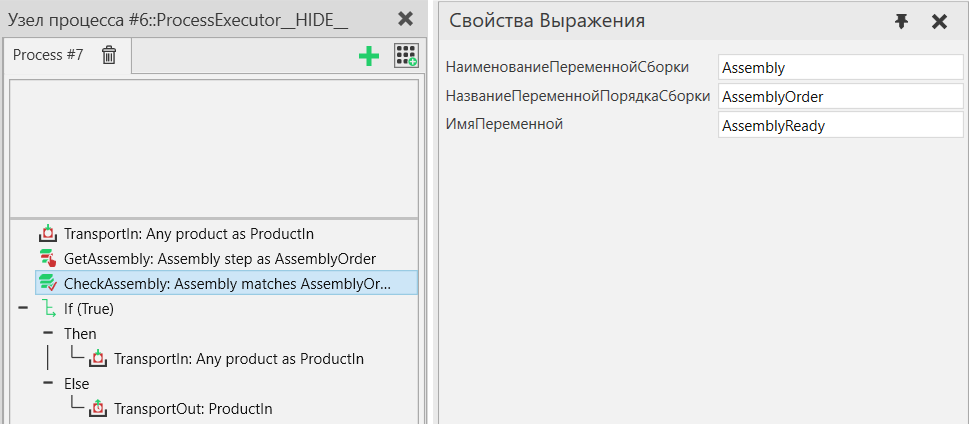

Проверить сборку |
|
Проверяет, соответствует ли текущее состояние экземпляра сборки заданному порядку сборки, и сохраняет результат в переменной процесса. Переменной результата присваивается значение «Истина», когда все слоты шаблонов, выбранные в заказе на сборку, заполнены продуктами, и «Ложь» в противном случае.  Рисунок 1. Пример процесса, который проверяет, выполнены ли определенные шаги сборки, и если нет, заполняет их с помощью оператора TransportIn перед отправкой сборки следующему процессу.
|